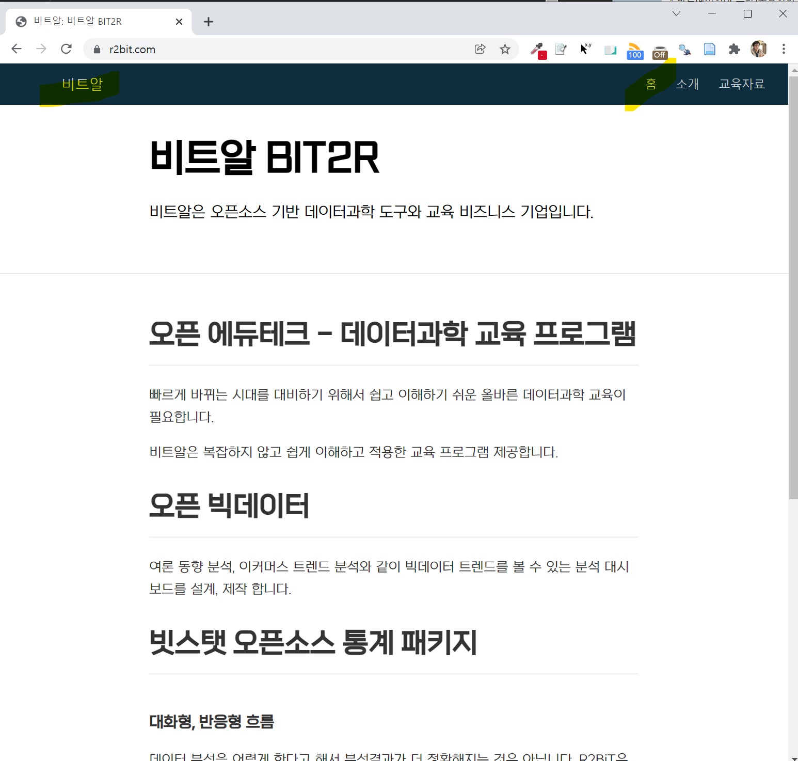

1 인코딩
1.1 distill 웹사이트 오류
distill 웹사이트를 제작할 때 발생하는 오류 중 하나가 인코딩(Encoding) 때분에 발생된다. 특히, 윈도우에서 이런 문제가 많은 다행히 R 4.2 버전부터 이런 문제가 완전히 해결되었다. 자세한 사항은 Upcoming Changes in R 4.2 on Windows을 참고한다.

1.1.1 문제 발생 환경
==> rmarkdown::render_site(encoding = 'UTF-8')
Rendering: ./about.Rmd
|....................... | 33%
ordinary text without R code
|............................................... | 67%
label: setup (with options)
List of 1
$ include: logi FALSE
|......................................................................| 100%
ordinary text without R code
"C:/PROGRA~3/CHOCOL~1/bin/pandoc" +RTS -K512m -RTS about.knit.md --to html5 --from markdown+autolink_bare_uris+tex_math_single_backslash --output about.html --lua-filter "C:\Users\statkclee\Documents\R\win-library\4.0\rmarkdown\rmarkdown\lua\pagebreak.lua" --lua-filter "C:\Users\statkclee\Documents\R\win-library\4.0\rmarkdown\rmarkdown\lua\latex-div.lua" --standalone --variable toc-float=1 --highlight-style "C:/Users/statkclee/Documents/R/win-library/4.0/distill/rmarkdown/templates/distill_article/resources/arrow.theme" --template "C:\Users\statkclee\Documents\R\win-library\4.0\distill\rmarkdown\templates\distill_article\resources\default.html" "--metadata=link-citations:true" --include-in-header "C:\Users\STATKC~1\AppData\Local\Temp\RtmpQtqLdL\file246c372260e4html" --include-in-header "C:\Users\STATKC~1\AppData\Local\Temp\RtmpQtqLdL\file246c23bf5568html" --include-in-header "C:\Users\STATKC~1\AppData\Local\Temp\RtmpQtqLdL\file246c5e3338d3html" --include-in-header "C:\Users\STATKC~1\AppData\Local\Temp\RtmpQtqLdL\file246c33977afhtml" --include-before-body "C:\Users\STATKC~1\AppData\Local\Temp\RtmpQtqLdL\file246c55011736html" --include-before-body "C:\Users\STATKC~1\AppData\Local\Temp\RtmpQtqLdL\file246ca1c4598html" --include-before-body "C:\Users\STATKC~1\AppData\Local\Temp\RtmpQtqLdL\file246c180a7d23html" --include-after-body "C:\Users\STATKC~1\AppData\Local\Temp\RtmpQtqLdL\file246c4dada52html" --include-after-body "C:\Users\STATKC~1\AppData\Local\Temp\RtmpQtqLdL\file246c774c4b73html" --include-after-body "C:\Users\STATKC~1\AppData\Local\Temp\RtmpQtqLdL\file246c405752d2html" --include-in-header "C:\Users\STATKC~1\AppData\Local\Temp\RtmpQtqLdL\rmarkdown-str246c684b29da.html" --mathjax --variable "mathjax-url:https://mathjax.rstudio.com/latest/MathJax.js?config=TeX-AMS-MML_HTMLorMML" --include-in-header "C:\Users\STATKC~1\AppData\Local\Temp\RtmpQtqLdL\file246c7001487ehtml"
Backtrace:
1. rmarkdown::render_site(encoding = "UTF-8")
2. generator$render(...)
3. default$render(...)
4. base::sapply(...)
5. base::lapply(X = X, FUN = FUN, ...)
...
7. rmarkdown:::render_one(...)
10. rmarkdown::render(...)
11. rmarkdown:::convert(output_file, run_citeproc)
12. rmarkdown::pandoc_convert(...)
13. rmarkdown:::stop2(...)
pandoc.exe: Cannot decode byte '\xba': Data.Text.Internal.Encoding.decodeUtf8: Invalid UTF-8 stream
Error: pandoc document conversion failed with error 1
Execution halted
Exited with status 1.
> sessionInfo()
R version 4.0.1 (2020-06-06)
Platform: x86_64-w64-mingw32/x64 (64-bit)
Running under: Windows 10 x64 (build 19043)
Matrix products: default
locale:
[1] LC_COLLATE=Korean_Korea.949 LC_CTYPE=Korean_Korea.949 LC_MONETARY=Korean_Korea.949 LC_NUMERIC=C
[5] LC_TIME=Korean_Korea.949
attached base packages:
[1] stats graphics grDevices utils datasets methods base
loaded via a namespace (and not attached):
[1] compiler_4.0.1 bookdown_0.23.1 fastmap_1.1.0 htmltools_0.5.2 tools_4.0.1 yaml_2.2.1 rmarkdown_2.11
[8] knitr_1.36 xfun_0.28 digest_0.6.29 rlang_0.4.11 evaluate_0.14 1.1.2 문제 해결 전략
pandoc.exe: Cannot decode byte '\xba': Data.Text.Internal.Encoding.decodeUtf8: Invalid UTF-8 stream 에서 제시된 인코딩 문제(한글)를 윈도우 환경에서 해결하기 위해 R 4.2 버전으로 올려 해결하는 다음 방식이 권장이 되고 있다. Upcoming Changes in R 4.2 on Windows에 따르면 현재 시점 “2021-12-09” 기준 아직 R 4.2 가 존재하지 않아 가장 최신 R 버전을 설치한다. R 업그레이드 관련 사항은 다음 R 업그레이드와 환경설정, 파일-객체 크기 블로그를 참고한다.
UCRT를 설치한다. 윈도우 10 이전 버전의 경우.RTools42 를 설치한다.
sessionInfo()## R version 4.1.2 (2021-11-01)
## Platform: x86_64-w64-mingw32/x64 (64-bit)
## Running under: Windows 10 x64 (build 19043)
##
## Matrix products: default
##
## locale:
## [1] LC_COLLATE=Korean_Korea.949 LC_CTYPE=Korean_Korea.949
## [3] LC_MONETARY=Korean_Korea.949 LC_NUMERIC=C
## [5] LC_TIME=Korean_Korea.949
##
## attached base packages:
## [1] stats graphics grDevices utils datasets methods base
##
## loaded via a namespace (and not attached):
## [1] bookdown_0.24 digest_0.6.29 R6_2.5.1 jsonlite_1.7.2
## [5] magrittr_2.0.1 evaluate_0.14 stringi_1.7.6 rlang_0.4.12
## [9] rstudioapi_0.13 jquerylib_0.1.4 bslib_0.3.1 rmarkdown_2.11
## [13] tools_4.1.2 stringr_1.4.0 xfun_0.28 yaml_2.2.1
## [17] fastmap_1.1.0 compiler_4.1.2 htmltools_0.5.2 knitr_1.36
## [21] sass_0.4.01.1.3 해법 결과
R version 4.1.2 (2021-11-01) -- "Bird Hippie"으로 버전업을 한 것으로 인코딩 문제는 해결되어 Distill Website를 이어서 제작할 수 있게 되었다.
==> rmarkdown::render_site(encoding = 'UTF-8')
Rendering: ./about.Rmd
|....................... | 33%
ordinary text without R code
|............................................... | 67%
label: setup (with options)
List of 1
$ include: logi FALSE
|......................................................................| 100%
ordinary text without R code
"C:/PROGRA~3/CHOCOL~1/bin/pandoc" +RTS -K512m -RTS about.knit.md --to html5 --from markdown+autolink_bare_uris+tex_math_single_backslash --output about.html --lua-filter "C:\Users\statkclee\Documents\R\win-library\4.1\rmarkdown\rmarkdown\lua\pagebreak.lua" --lua-filter "C:\Users\statkclee\Documents\R\win-library\4.1\rmarkdown\rmarkdown\lua\latex-div.lua" --standalone --variable toc-float=1 --highlight-style "C:/Users/statkclee/Documents/R/win-library/4.1/distill/rmarkdown/templates/distill_article/resources/arrow.theme" --template "C:\Users\statkclee\Documents\R\win-library\4.1\distill\rmarkdown\templates\distill_article\resources\default.html" "--metadata=link-citations:true" --include-in-header "C:\Users\STATKC~1\AppData\Local\Temp\RtmpI79rFt\file36a83edc7bb9html" --include-in-header "C:\Users\STATKC~1\AppData\Local\Temp\RtmpI79rFt\file36a834eb3b01html" --include-in-header "C:\Users\STATKC~1\AppData\Local\Temp\RtmpI79rFt\file36a86f714f3dhtml" --include-in-header "C:\Users\STATKC~1\AppData\Local\Temp\RtmpI79rFt\file36a815503ebehtml" --include-before-body "C:\Users\STATKC~1\AppData\Local\Temp\RtmpI79rFt\file36a8446679bhtml" --include-before-body "C:\Users\STATKC~1\AppData\Local\Temp\RtmpI79rFt\file36a820ae31f3html" --include-before-body "C:\Users\STATKC~1\AppData\Local\Temp\RtmpI79rFt\file36a84594c5html" --include-after-body "C:\Users\STATKC~1\AppData\Local\Temp\RtmpI79rFt\file36a8412c01html" --include-after-body "C:\Users\STATKC~1\AppData\Local\Temp\RtmpI79rFt\file36a82a6a4838html" --include-after-body "C:\Users\STATKC~1\AppData\Local\Temp\RtmpI79rFt\file36a81dff7900html" --include-in-header "C:\Users\STATKC~1\AppData\Local\Temp\RtmpI79rFt\rmarkdown-str36a85c65588f.html" --mathjax --variable "mathjax-url:https://mathjax.rstudio.com/latest/MathJax.js?config=TeX-AMS-MML_HTMLorMML" --include-in-header "C:\Users\STATKC~1\AppData\Local\Temp\RtmpI79rFt\file36a83cb965c2html"
|....................... | 33%
ordinary text without R code
|............................................... | 67%
label: setup (with options)
List of 1
$ include: logi FALSE
|......................................................................| 100%
ordinary text without R code
Rendering: ./index.Rmd
"C:/PROGRA~3/CHOCOL~1/bin/pandoc" +RTS -K512m -RTS index.knit.md --to html5 --from markdown+autolink_bare_uris+tex_math_single_backslash --output index.html --lua-filter "C:\Users\statkclee\Documents\R\win-library\4.1\rmarkdown\rmarkdown\lua\pagebreak.lua" --lua-filter "C:\Users\statkclee\Documents\R\win-library\4.1\rmarkdown\rmarkdown\lua\latex-div.lua" --standalone --variable toc-float=1 --highlight-style "C:/Users/statkclee/Documents/R/win-library/4.1/distill/rmarkdown/templates/distill_article/resources/arrow.theme" --template "C:\Users\statkclee\Documents\R\win-library\4.1\distill\rmarkdown\templates\distill_article\resources\default.html" "--metadata=link-citations:true" --include-in-header "C:\Users\STATKC~1\AppData\Local\Temp\RtmpI79rFt\file36a83dac6e1dhtml" --include-in-header "C:\Users\STATKC~1\AppData\Local\Temp\RtmpI79rFt\file36a840a76800html" --include-in-header "C:\Users\STATKC~1\AppData\Local\Temp\RtmpI79rFt\file36a856b9c99html" --include-in-header "C:\Users\STATKC~1\AppData\Local\Temp\RtmpI79rFt\file36a83884493html" --include-before-body "C:\Users\STATKC~1\AppData\Local\Temp\RtmpI79rFt\file36a87977258fhtml" --include-before-body "C:\Users\STATKC~1\AppData\Local\Temp\RtmpI79rFt\file36a83749bb6html" --include-before-body "C:\Users\STATKC~1\AppData\Local\Temp\RtmpI79rFt\file36a863f2290dhtml" --include-after-body "C:\Users\STATKC~1\AppData\Local\Temp\RtmpI79rFt\file36a840af79a0html" --include-after-body "C:\Users\STATKC~1\AppData\Local\Temp\RtmpI79rFt\file36a830fb1a9html" --include-after-body "C:\Users\STATKC~1\AppData\Local\Temp\RtmpI79rFt\file36a87a9433e6html" --include-in-header "C:\Users\STATKC~1\AppData\Local\Temp\RtmpI79rFt\rmarkdown-str36a874e464bb.html" --mathjax --variable "mathjax-url:https://mathjax.rstudio.com/latest/MathJax.js?config=TeX-AMS-MML_HTMLorMML" --include-in-header "C:\Users\STATKC~1\AppData\Local\Temp\RtmpI79rFt\file36a8da47cfdhtml"
|....................... | 33%
inline R code fragments
|............................................... | 67%
label: setup (with options)
List of 1
$ include: logi FALSE
|......................................................................| 100%
ordinary text without R code
Rendering: ./learnings.Rmd
"C:/PROGRA~3/CHOCOL~1/bin/pandoc" +RTS -K512m -RTS learnings.knit.md --to html5 --from markdown+autolink_bare_uris+tex_math_single_backslash --output learnings.html --lua-filter "C:\Users\statkclee\Documents\R\win-library\4.1\rmarkdown\rmarkdown\lua\pagebreak.lua" --lua-filter "C:\Users\statkclee\Documents\R\win-library\4.1\rmarkdown\rmarkdown\lua\latex-div.lua" --standalone --variable toc-float=1 --highlight-style "C:/Users/statkclee/Documents/R/win-library/4.1/distill/rmarkdown/templates/distill_article/resources/arrow.theme" --template "C:\Users\statkclee\Documents\R\win-library\4.1\distill\rmarkdown\templates\distill_article\resources\default.html" "--metadata=link-citations:true" --include-in-header "C:\Users\STATKC~1\AppData\Local\Temp\RtmpI79rFt\file36a8f06526dhtml" --include-in-header "C:\Users\STATKC~1\AppData\Local\Temp\RtmpI79rFt\file36a85ef4eddhtml" --include-in-header "C:\Users\STATKC~1\AppData\Local\Temp\RtmpI79rFt\file36a866444d70html" --include-in-header "C:\Users\STATKC~1\AppData\Local\Temp\RtmpI79rFt\file36a838d94d7ehtml" --include-before-body "C:\Users\STATKC~1\AppData\Local\Temp\RtmpI79rFt\file36a8f83120html" --include-before-body "C:\Users\STATKC~1\AppData\Local\Temp\RtmpI79rFt\file36a82ab67056html" --include-before-body "C:\Users\STATKC~1\AppData\Local\Temp\RtmpI79rFt\file36a84494329ahtml" --include-after-body "C:\Users\STATKC~1\AppData\Local\Temp\RtmpI79rFt\file36a8419265a8html" --include-after-body "C:\Users\STATKC~1\AppData\Local\Temp\RtmpI79rFt\file36a840cb63d1html" --include-after-body "C:\Users\STATKC~1\AppData\Local\Temp\RtmpI79rFt\file36a877af1a46html" --include-in-header "C:\Users\STATKC~1\AppData\Local\Temp\RtmpI79rFt\rmarkdown-str36a873563a75.html" --mathjax --variable "mathjax-url:https://mathjax.rstudio.com/latest/MathJax.js?config=TeX-AMS-MML_HTMLorMML" --include-in-header "C:\Users\STATKC~1\AppData\Local\Temp\RtmpI79rFt\file36a84f244e88html"
Output created: docs/index.html
Warning messages:
1: In parse(con, keep.source = TRUE, encoding = "UTF-8", srcfile = srcfile) :
argument encoding="UTF-8" is ignored in MBCS locales
2: In parse(con, keep.source = TRUE, encoding = "UTF-8", srcfile = srcfile) :
argument encoding="UTF-8" is ignored in MBCS locales
3: In parse(con, keep.source = TRUE, encoding = "UTF-8", srcfile = srcfile) :
argument encoding="UTF-8" is ignored in MBCS locales